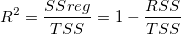
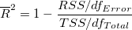

になり、 予測変数 x は線形的に y 値を予測できません。これを確認するには、最初に、次のような式でデータポイントとその平均との差、平均についての二乗和を計算します。
になり、 予測変数 x は線形的に y 値を予測できません。これを確認するには、最初に、次のような式でデータポイントとその平均との差、平均についての二乗和を計算します。フィットの良さは、どのように決まるのでしょうか?1つの明確な基準は、フィット曲線が実際のデータポイントにどの程度近いのかということです。前のセクションから、残差二乗和 (RSS) または既約カイ二乗値が、このような距離を評価するのに使用できる定量的な値であることが分かっています。しかし、残差二乗和(RSS) の値は、データセットによって異なり、この値を一定の範囲で再スケールする必要があります。一方、データの特徴を説明するために y 値の平均を使いたいこともあります。このような場合、フィット曲線は水平線になり、 予測変数 x は線形的に y 値を予測できません。これを確認するには、最初に、次のような式でデータポイントとその平均との差、平均についての二乗和を計算します。
^2 \,\!")
最小二乗フィッティングでは、TSS を回帰によって明らかになる変化量と回帰によって明らかにならない変化量の2つの部分に分けることができます。
|
|
|
明らかに、データポイントはフィット曲線に近いほどば、RSS が小さくなり、SSregで表される合計変化量の比率は大きくなります。つまり、TSSに対する SSreg の比は、 回帰モデルの性質の1つの尺度として使うことができます。この量は、決定係数と呼ばれ、次の式で計算されます。

上記の式から、良いフィットモデルを使うと、 は0から1の間で変化するということが分かります。1に近い値は、フィットが良いものだということを示しています。
は0から1の間で変化するということが分かります。1に近い値は、フィットが良いものだということを示しています。
数学的には、自由度が に影響します。それは、モデルに変数を追加すると、 が大きくなりますが、これはフィットが良くなったことを示しているわけではありません。この影響を避けるため、調整 を見ることができます。

数式から、補正 が の増加に勝っていることが分かります。特に複数の予測変数 (k) モデルでサンプルサイズ (n) が小さいフィットの場合にそうなります。通常、決定係数を「R二乗値」と呼びますが、実際には R値の二乗ではありません。ほとんどの場合、その値は0から1の間になりますが、フィット結果が良くないときにはR^2 は負の値になることもあります。これは、 を計算する数式が であるために起こります。悪いモデルが使われた場合、2番目の項が1より大きくなります。
しかし、 あるいは補正 を使うことは十分ではありません。例えば、次のグラフでは、プロットBからDで表されるフィット曲線は、高い 値になりますが、見かけ上のモデルが不適切です。そのため、残差分析によって回帰の結果を診断する必要があります。

線形フィットに交点が含まれている場合、以下の関係に基づきます。
^2 = \sum_{i=1}^n (y_i-f(x_i))^2 + \sum_{i=1}^n (f(x_i)-\bar{y})^2")
ここで、はフィットデータ、  は従属変数の平均、
は従属変数の平均、 \;") はフィット値を表しています。
はフィット値を表しています。
上記数式の左辺は総平方和を表します。
^2")
右辺の最初の項は残差平方和を表します。
)^2")
右辺の2番目の項は、回帰による平方和を表します。
-\bar{y})^2")
よって、TSS = RSS + SSR.が成り立ちます。
決定係数（R二乗値）はSSRとTSSの比率で定義されます。
)^2}{\sum_{i=1}^n (y_i-\bar{y})^2}")
よって、R二乗値は交点を含んだときのフィット結果で説明できる平均についての偏差の比率を表しています。
線形フィットで切片が固定されている場合、上記切片を含む線形フィットで説明された関係は満たされなくなります。悪いフィットの場合、 切片を含む線形フィットで定義した式では負のR二乗値を生む結果になってしまう可能性もあります。それでは、意味をなしません。
線形フィットの切片が固定されている場合、以下の関係に基づきます。
)^2 + \sum_{i=1}^n (f(x_i))^2")
そして、TSSとSSRは再定義する必要があり、RSSについては変更はありません。

)^2")
決定係数（R二乗値）は以下のように再定義されます。
この方法で、R二乗値は常に整数(負の数ではない)になります。また、R二乗値は切片を固定したときのフィット結果で説明できる0付近の値についての偏差の比率を表しています。